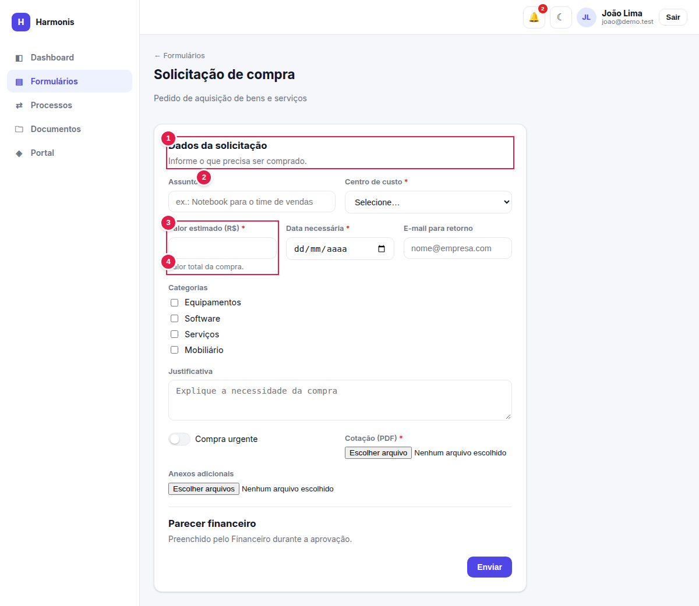
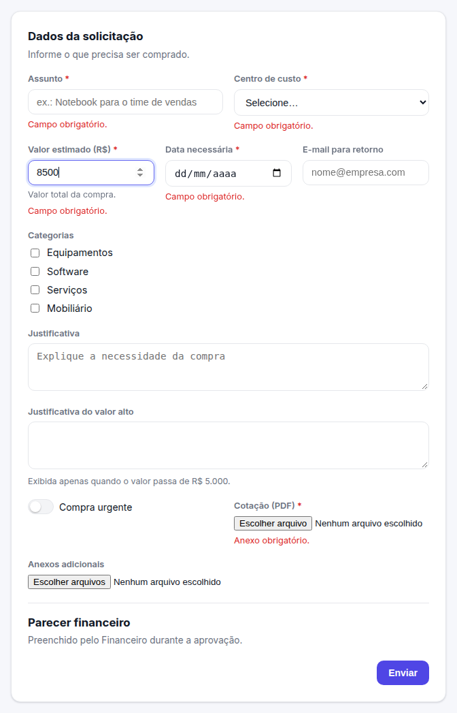
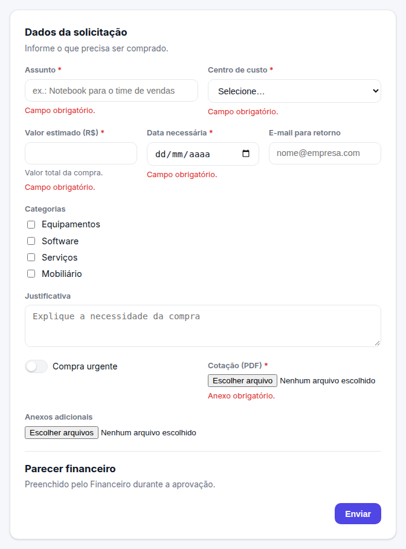
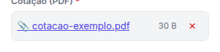
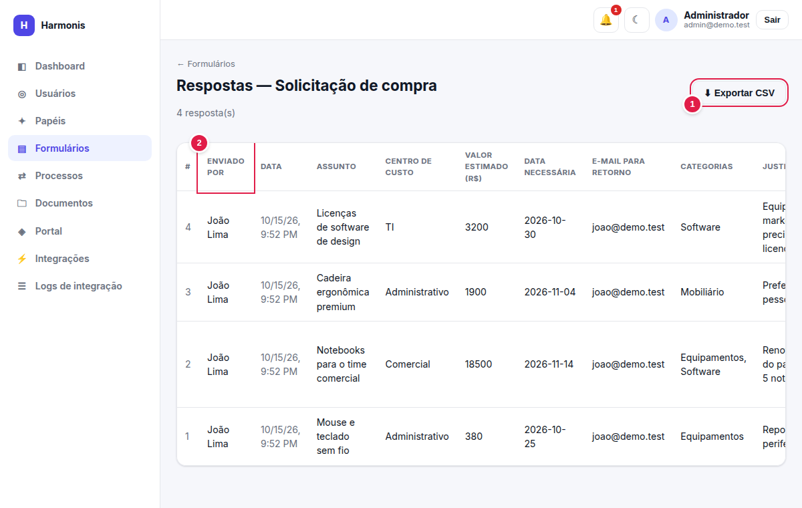

Preenchimento e respostas
Como o solicitante preenche e envia um formulário, o que acontece depois do envio e como consultar e exportar as respostas.
Preencher: forms.view (o formulário precisa estar Publicado). Ver respostas e exportar: forms.submissions.
Preenchendo um formulário
- Abra Formulários e clique em ✎ na linha do formulário desejado (o ícone só existe para formulários publicados).
- Preencha os campos. Os marcados com * são obrigatórios.
- Anexe os arquivos solicitados (veja Anexando arquivos).
- Clique em Enviar. Aparece “Resposta enviada com sucesso!”; use Enviar outra para preencher novamente.

- Bloco — título (e texto de apoio) que agrupa os campos seguintes.
- Asterisco vermelho — campo obrigatório.
- Campos lado a lado — cada um ocupa metade ou um terço da linha, conforme configurado no construtor.
- Texto de ajuda — orientação cinza sob o campo (ex.: “Valor total da compra.”).
Campos configurados como “preenchidos no fluxo” não aparecem para o solicitante — no exemplo, o bloco Parecer financeiro está vazio porque o Financeiro o completa durante a aprovação. Campos com exibição condicional só aparecem quando a condição é atendida.
Campos que aparecem sozinhos

Mensagens de validação
Se algo estiver incorreto, o envio é recusado e as mensagens aparecem em vermelho sob cada campo — nada é enviado até que tudo esteja correto.

| Mensagem | Causa |
|---|---|
| Campo obrigatório. | Um campo obrigatório visível está vazio. |
| Anexo obrigatório. | Um campo de anexo obrigatório está sem arquivo. |
| Informe um e-mail válido. | O texto não tem formato de e-mail. |
| Opção inválida. | O valor escolhido não está entre as opções do campo. |
| Formato inválido. (ou a mensagem definida no construtor) | O texto não obedece à expressão regular do campo. |
| Mensagens de número, data e tamanho | Descrevem o limite violado (mínimo/máximo, positivo, inteiro, comparação com outro campo, datas, tamanho do texto). |
Anexando arquivos

- O arquivo é enviado ao escolher. Se o tipo ou o tamanho não forem aceitos, a mensagem aparece abaixo do campo e o arquivo não é anexado.
- Em anexo único, depois de anexar, o botão de escolha some; remova o arquivo (✕) para trocar.
- Em anexo múltiplo, você pode continuar adicionando arquivos; cada um é validado separadamente.
- Clicar no nome do arquivo baixa uma cópia. Ao remover (✕) antes do envio, o arquivo é apagado do servidor.
- Os limites (tipos e tamanho) são definidos por campo no construtor; o servidor aceita no máximo 10 MB por arquivo.
Se fechar a página sem enviar o formulário, arquivos já carregados ficam “soltos” no servidor e não aparecem em lugar algum. Remova-os com ✕ antes de sair, se possível.
O que acontece depois de enviar
- A resposta é registrada e os anexos são vinculados a ela (eles deixam de poder ser removidos pelo solicitante).
- Se o formulário tem fluxo de aprovação, um processo é criado e a primeira etapa aplicável é aberta; os aprovadores recebem uma notificação.
- Integrações vinculadas a Ao enviar são disparadas (em segundo plano).
- Você acompanha o andamento em Processos → Minhas solicitações (capítulo 7).
A interface não permite editar nem excluir respostas já enviadas. Para corrigir um dado, envie uma nova resposta (e, se for o caso, reprove a anterior).
Consultando as respostas
Em Formulários, clique em 📊 na linha do formulário (exige forms.submissions).

- Exportar CSV — baixa todas as respostas em planilha (aparece quando há respostas).
- Colunas fixas — # (numeração, a mais recente tem o maior número), Enviado por e Data; depois, uma coluna por campo (blocos de layout não viram coluna).
- Anexos — cada arquivo aparece como link 📎; clique para baixar.
Campos de seleção múltipla mostram os valores separados por vírgula; confirmações mostram Sim/Não. Campos completados durante o fluxo também aparecem aqui assim que preenchidos.
Exportação em CSV
| Característica | Detalhe |
|---|---|
| Codificação | UTF-8 com BOM (o Excel abre corretamente os acentos). |
| Separador | Ponto e vírgula (;) — padrão do Excel em português. |
| Colunas | #, Enviado por, Data e um rótulo por campo (sem os blocos). |
| Valores | Confirmação → Sim/Não; seleção múltipla → itens separados por “, ”; anexos → nomes dos arquivos. |
| Data | Data e hora de envio em formato ISO (UTC). |
Resgatar anexos
Os arquivos enviados nunca ficam acessíveis por um endereço público. Para baixar, você precisa estar autenticado e ter acesso à tela em que o link aparece (Respostas ou o detalhe do Processo). O download usa o nome original do arquivo.